Controle de versão, Python, componentes e configurações¶
As ferramentas de apoio que completam a IDE.
Controle de versão (Git-D)¶
O painel git da AURORA, aberto pelo botão Controle de Versão ou pelas fichas de conta na barra de status. O badge do botão mostra quantos arquivos mudaram.
Nota
Quem usa a AURORA há mais tempo conheceu este painel como Dagr. É a mesma ferramenta: apenas abreviamos o nome para Git-D, que diz na hora do que se trata.
{kind=link}
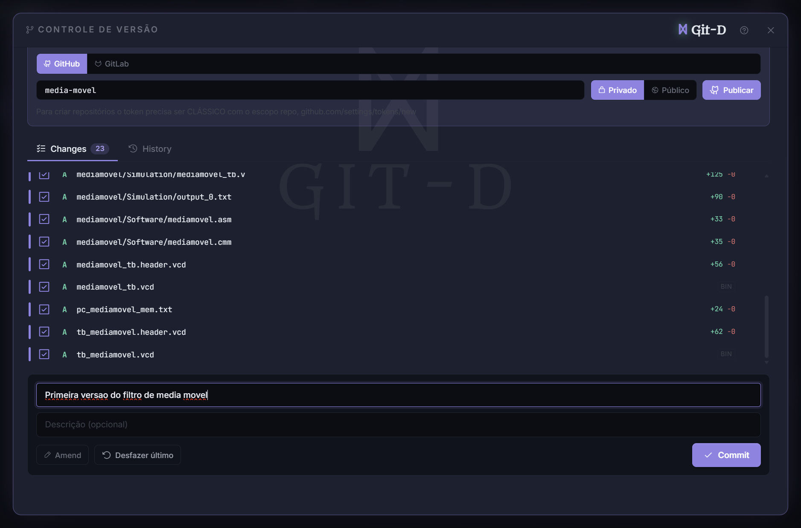
O essencial:
Alterações: marque os arquivos, escreva o resumo e clique em Commit. Cada arquivo tem o diff inline e o botão de descartar.
Histórico: a lista de commits, com o diff de cada arquivo por demanda.
Sincronizar: Fetch, Pull, Push. O menu do branch cria, troca e mescla branches, com stash automático quando a troca esbarra em alterações não commitadas.
Contas: GitHub e GitLab dividem a mesma fileira do painel, cada um com o seu cartão, sem hierarquia entre as forjas. O login de qualquer um usa o fluxo de dispositivo (o botão Entrar abre o navegador e mostra um código para digitar, sem senha na IDE) ou um token pessoal; no GitLab, o token precisa do escopo
api, e um campo de instância aceita servidores próprios além dogitlab.com.Repositórios: logado, dá para publicar o projeto direto (Privado ou Público) e clonar os seus repositórios. A lista mistura as duas origens, ordenada por atividade, com um selo dizendo de onde vem cada uma; ao publicar com as duas contas conectadas, um seletor pergunta a forja.
Um projeto sem repositório oferece Inicializar na hora; o menu da árvore cria um
.gitignoreadequado ao SAPHO.A barra de status mostra as duas fichas o tempo todo: apagada quando a conta está desconectada, com a foto e o
@usuarioquando conectada.
{kind=link}
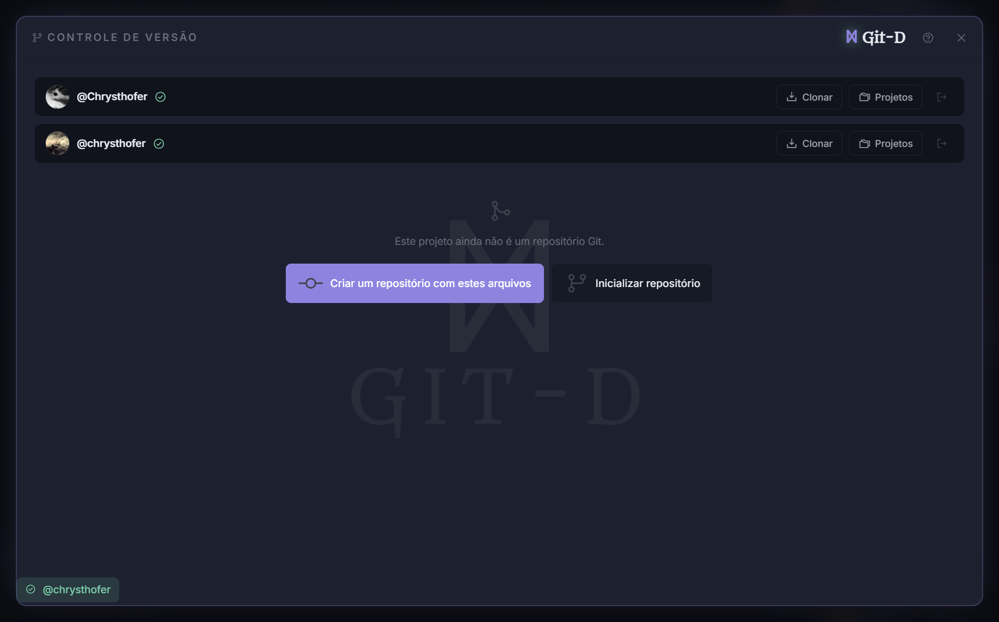
Figura 33 As duas forjas no mesmo painel. O cartão muda de forma conforme a largura, mas o conteúdo é o mesmo.¶
Dica
Em computador compartilhado, repare na opção Limpar o acesso ao GitHub e ao GitLab ao fechar a AURORA, na aba Geral das Configurações. Ela vem ligada de fábrica: ao fechar a AURORA, as duas contas saem do cofre da IDE, do arquivo de credenciais do git e do Gerenciador de Credenciais do Windows, sem depender de alguém lembrar. O botão Limpar agora, logo abaixo, faz o mesmo sem esperar o fechamento.
{kind=link}
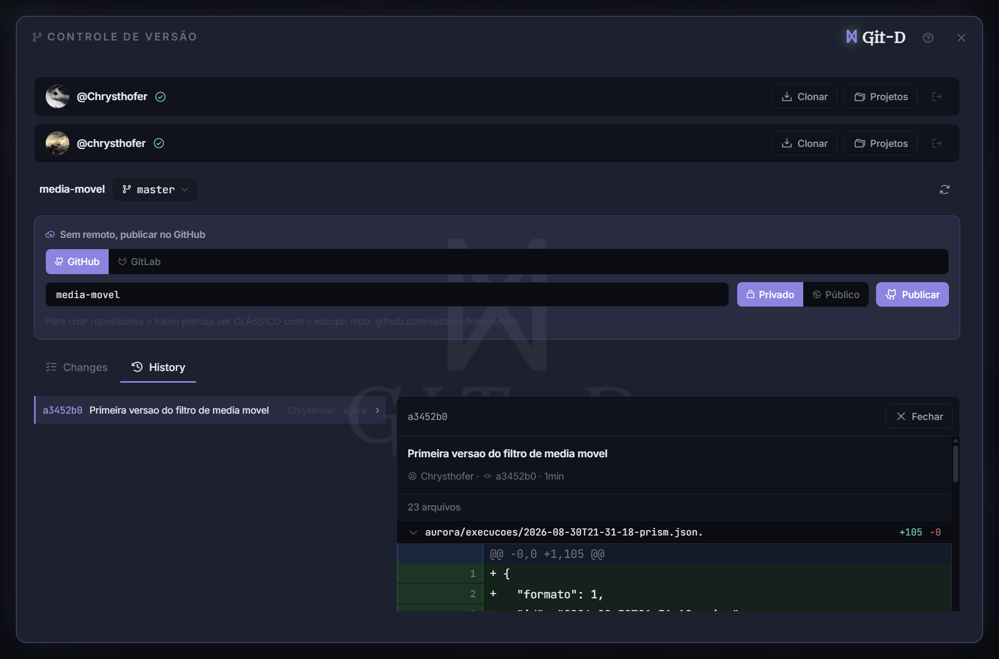
A árvore de arquivos mostra o estado git de cada arquivo (modificado, novo, excluído) por letras e cores, nas duas visões.
Bibliotecas Python (PyLibs)¶
O painel Bibliotecas Python instala pacotes para os testbenches cocotb e para scripts de análise, no Python embarcado da AURORA, sem tocar no Python da sua máquina.
{kind=link}
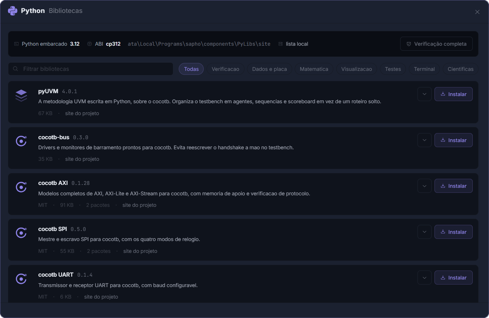
O catálogo é curado: verificação de UVM e barramentos, leitura de ondas por script, gráficos, matemática, formatos de memória e comunicação serial. Cada item instala com um clique, com o download conferido por hash.
Fora do catálogo, a seção Outra biblioteca da PyPI aceita qualquer pacote puro Python: a AURORA verifica a compatibilidade antes de baixar. Pacotes com código compilado (numpy, scipy, pandas) não rodam no Python embarcado; para esses, use o seu próprio Python pelo terminal.
O isolamento é a regra: as bibliotecas do painel valem para o Python embarcado e para mais ninguém. No terminal TCMD,
apython script.pyroda com elas;pythoncontinua sendo o do sistema, com os seus pacotes do pip, a menos que você troque comUse-Python aurora(a troca vale só naquela sessão).Um vigia confere a integridade das bibliotecas de tempos em tempos; uma biblioteca quebrada (antivírus é a causa clássica) acende o badge do botão e ganha a ação Reparar.
Componentes¶
O instalador da AURORA traz só o que é o SAPHO em si: a IDE e os compiladores do YANC. O resto — simuladores, visualizadores, formatadores, os agentes de IA — são componentes: ferramentas que você baixa quando for usar e pode remover para recuperar espaço. O painel mora em Configurações, aba Componentes, a segunda da lista.
{kind=link}
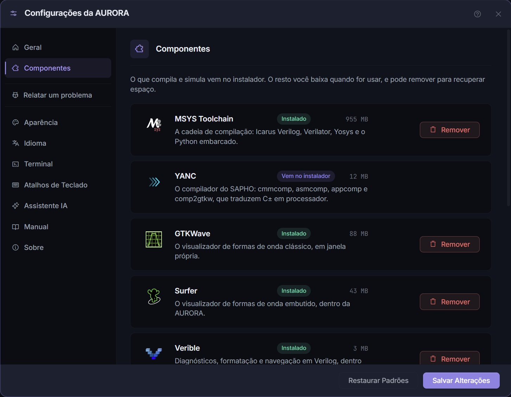
Figura 34 Cada componente é um cartão com a marca, um selo de estado, o tamanho e a ação. O rodapé resume o que falta baixar.¶
Componente |
O que é |
Download |
|---|---|---|
MSYS Toolchain |
a cadeia de compilação: Icarus Verilog, Verilator, Yosys e o Python embarcado |
272 MB |
YANC |
os compiladores do SAPHO; vem no instalador e não pode ser removido |
— |
GTKWave |
o visualizador de ondas clássico, em janela própria |
30 MB |
Surfer |
o visualizador de ondas embutido, dentro da AURORA |
16 MB |
Verible |
diagnósticos, formatação e navegação em Verilog, dentro do editor |
2 MB |
slang |
análise semântica de SystemVerilog |
3 MB |
clang-format |
formatação de C, C++ e C± com Shift+Alt+F |
2 MB |
Claude Code |
o agente da Anthropic, usado pela Aurora Intelligence no modo Claude Code |
90 MB |
Codex |
o agente da OpenAI, usado pela Aurora Intelligence no modo Codex |
132 MB |
Como o painel se comporta:
Cada cartão carrega um selo: Instalado, Não instalado, Atualização disponível, Vem no instalador (o YANC) ou Necessário para compilar, o selo urgente do MSYS e do YANC.
As ações são Baixar, Atualizar e Remover. Remover mostra o preço antes: o que depende do componente para de funcionar, e tê-lo de volta custa o download de novo. Os seus projetos nunca são tocados.
Tentar usar uma ferramenta cujo componente falta não dá erro seco: um diálogo explica o que falta e oferece Baixar agora, e as linhas de terminal que citam um componente ausente ganham um botão Abrir Componentes.
O botão Verificar e consertar do rodapé — a maleta de primeiros socorros — limpa os caches, confere os arquivos de cada componente e baixa de novo o que estiver incompleto ou quebrado. Componente saudável não é tocado.
Abrir a pasta leva ao lar dos componentes,
%LOCALAPPDATA%\SAPHO\components. A atualização da AURORA preserva essa pasta; desinstalar o SAPHO a apaga.
Configurações¶
Configurações abre as preferências, em nove abas:
Aba |
O que tem |
|---|---|
Geral |
tooltips da interface; confiar em links externos do chat da IA; onde o PRISM e o Surfer abrem, janela própria ou aba do editor; limpar o acesso ao GitHub e ao GitLab ao fechar (ligado por padrão) e Limpar agora; avisar quando a internet cair |
Componentes |
baixar, atualizar, consertar e remover as ferramentas; a seção acima |
Aparência |
o fundo animado da tela de boas-vindas (desligado por padrão); trocar o ícone do aplicativo |
Idioma |
Português ou English, para a interface e para as mensagens dos compiladores |
Terminal |
modo verboso: mostra as linhas de comando completas de cada etapa |
Atalhos de Teclado |
regravar os atalhos principais; clique no atalho e pressione a combinação nova |
Assistente IA |
os cartões de provedores do capítulo anterior |
Manual |
o manual do SAPHO neste computador; a seção abaixo |
Sobre |
versão, situação do atualizador, equipe, licenças |
{kind=link}
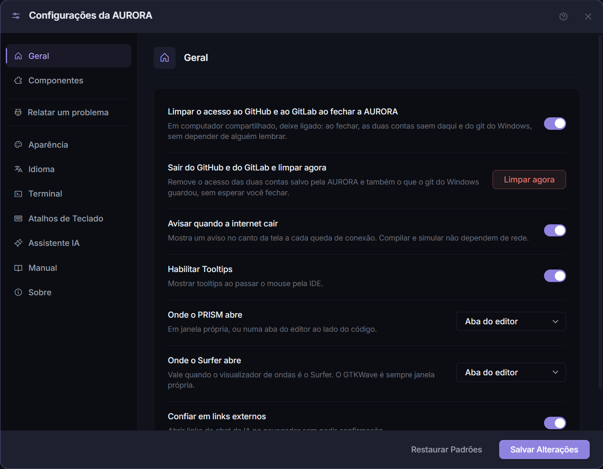
Figura 35 A aba Geral. As opções de conta do GitHub e do GitLab são as primeiras, porque são as que mais importam em computador compartilhado.¶
{kind=link}
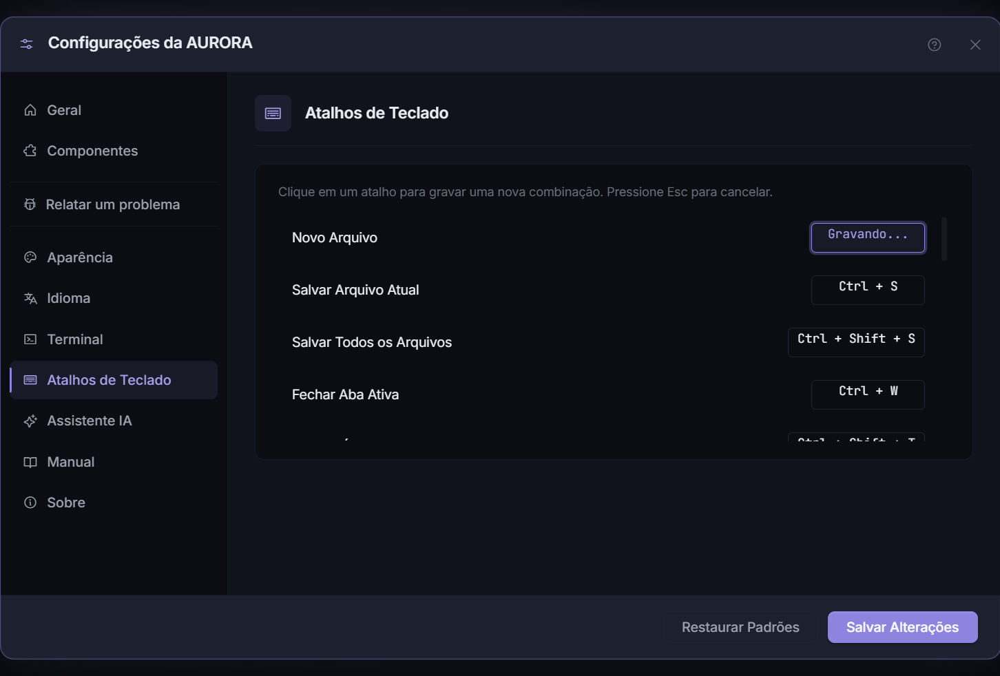
Detalhe que evita surpresa: fechar o painel sem Salvar Alterações descarta o que foi mudado.
{kind=link}
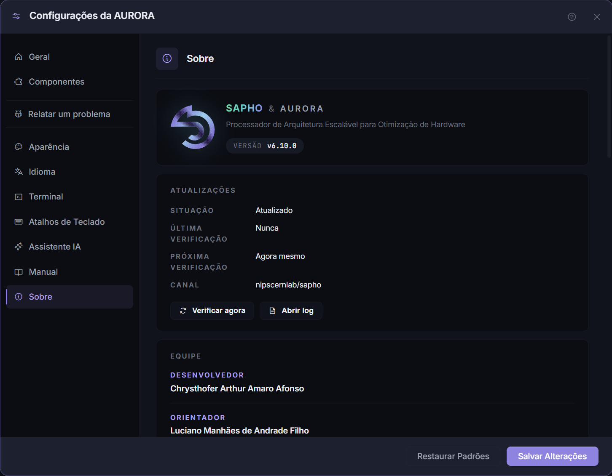
Este manual, dentro da AURORA¶
O manual tem aba própria nas Configurações: Manual. Um cartão de estado diz se a cópia offline está Neste computador, com a versão dela, e três botões fazem o resto: Abrir na AURORA abre a cópia local, sem internet; Abrir no navegador abre este site; Procurar atualização busca uma versão nova na hora. A cópia offline também se atualiza sozinha quando saem correções, sem esperar uma versão nova do aplicativo.
{kind=link}
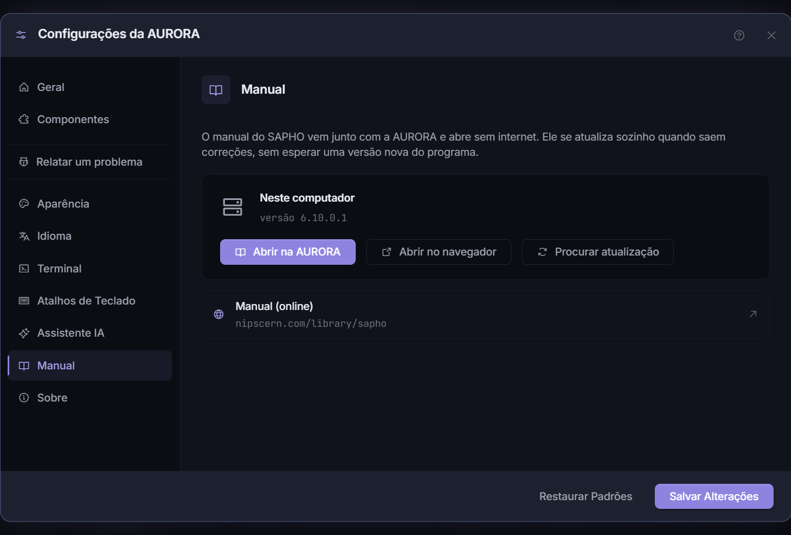
O ponto de interrogação dos modais¶
Você quase nunca vai precisar abrir o manual pelo começo. Os modais que exigem alguma decisão trazem um ponto de interrogação ao lado do X, com a dica dizendo qual assunto ele abre: são o Hub de Processadores, o Novo Projeto, a Configuração de ondas, o Histórico de compilações, a busca nos arquivos, as Bibliotecas Python, o Controle de Versão e as próprias Configurações.
{kind=link}
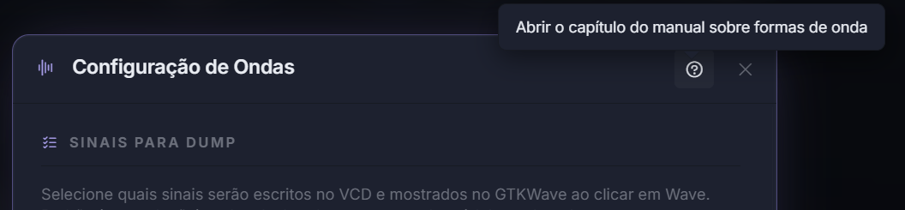
Figura 36 O botão no cabeçalho do modal de ondas. A dica diz aonde ele leva, antes do clique.¶
O clique não abre um índice para você procurar: abre o capítulo que trata daquela tela, direto. O manual aparece numa janela da própria AURORA, com busca, sumário e os botões de voltar e avançar, e funciona sem internet, porque é a cópia instalada que está sendo lida. Se a cópia offline não estiver na máquina, o mesmo botão abre a página equivalente no site.
{kind=link}
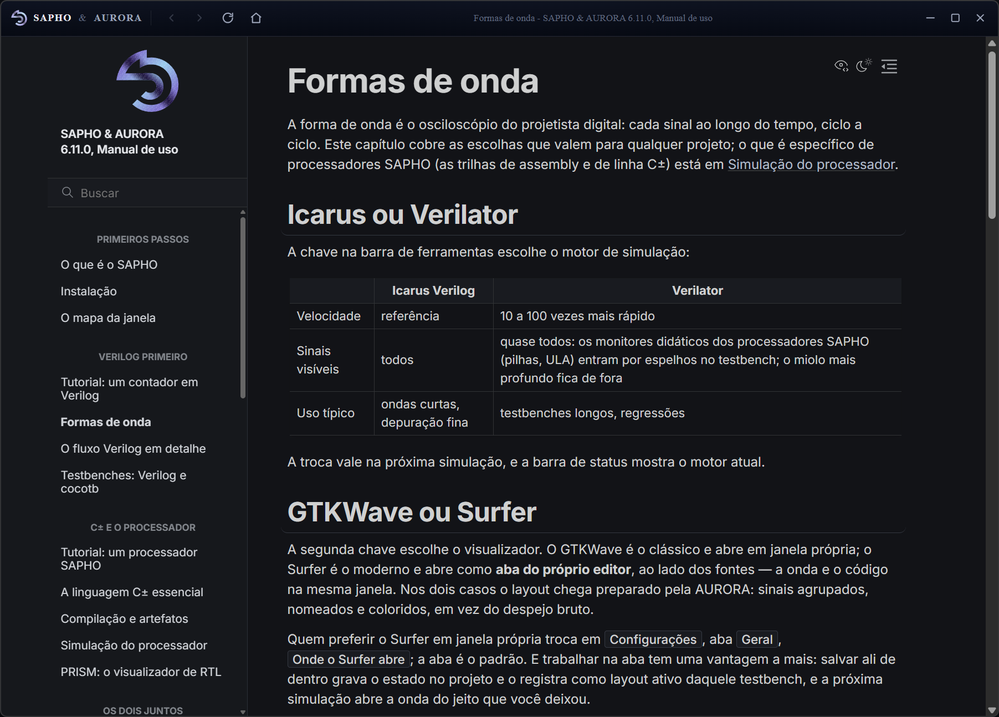
Figura 37 O que o botão do modal de ondas abriu: este capítulo, na cópia instalada, dentro da AURORA.¶
Relatar um problema¶
O botão Relatar um problema, na barra lateral das Configurações, abre o formulário de relato: o que aconteceu, o que você esperava e como reproduzir, mais um e-mail opcional para receber a resposta. Antes de enviar, a seção Ver o diagnóstico que vai junto mostra exatamente o que acompanha o relato: versão, sistema, quais componentes a máquina tem e o terminal recortado em volta dos erros, com a vizinhança de cada um. Conteúdo de arquivos, senhas e conversas com a Aurora Intelligence nunca vão junto, e o nome de usuário é removido dos caminhos.
Enviar relato manda direto para a equipe; Enviar por e-mail monta a mensagem no seu webmail, para quem preferir. Quanto mais contexto no relato, melhor a resposta.
{kind=link}
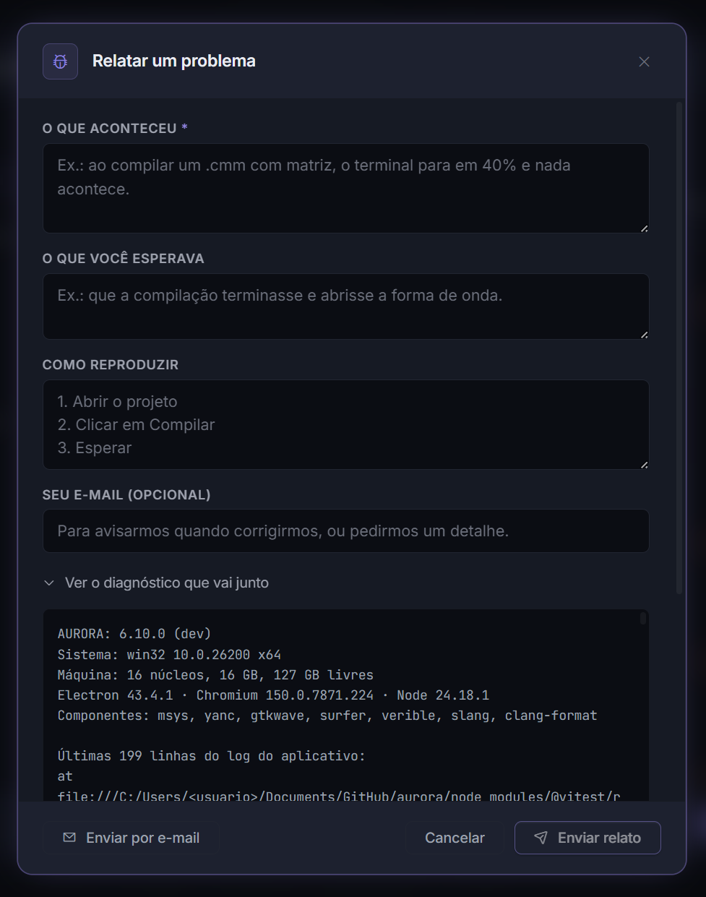